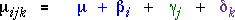
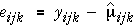
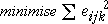

Parameter estimates
The main effects model involves several unknown parameters that can be adjusted to fit the experimental data.

As in other normal models, we define the residual for each observation,

The parameters are chosen by least squares — to minimise the sum of the squared residuals,

Soft drink bottling
The diagram below shows the flexibility of main-effects models for the soft drink bottling data.
Add model terms for Carbonation and Pressure and drag the four red arrows to adjust the parameters. The residuals are vertical distances between the crosses and the corresponding model means. Click Least squares to minimise the sum of squared residuals.
Click Spd to add a term for Line speed to the model. Drag upwards the red arrow corresponding to low levels of Carbonation and Pressure and observe the flexibility of the model with all three main effects. Again click Least squares to find the model that fits the data best.